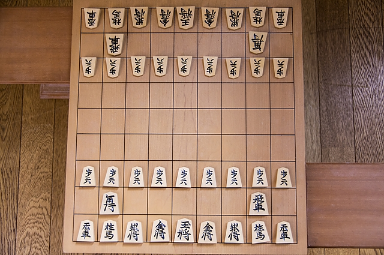
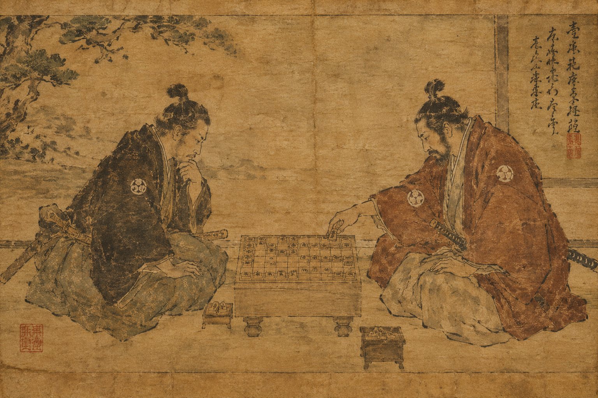

What is Shogi?

Shogi is a traditional Japanese strategy board game that is often described as Japanese chess. Two players compete against each other on a 9 by 9 board, using pieces with different movement abilities to capture the opponent's king.
One of the most unique features of shogi is that captured pieces can be returned to the board and used by the player who captured them. This creates many possible strategies throughout the game.
Shogi Through History

Shogi developed in Japan from earlier forms of chess that traveled through Asia. Over time, the game developed its own unique rules and pieces and became the form of shogi played today.